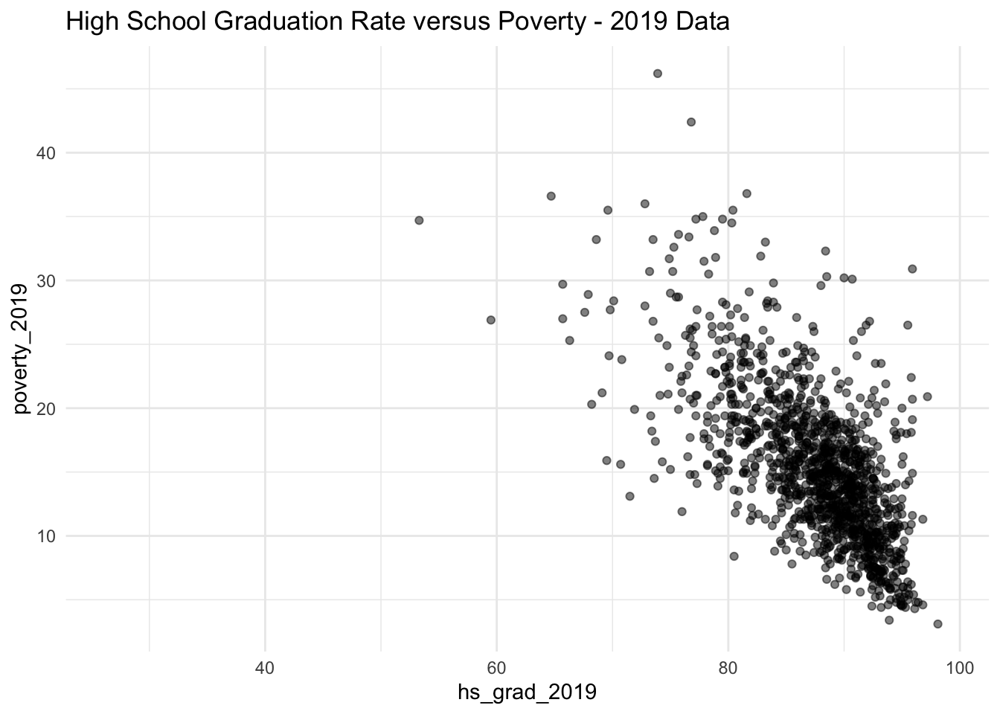

Suppose we want to model a response variable \(Y\) in terms of some predictor variables, \((X_1, X_2, X_3)\). One very general form of the model would be:
\[\begin{equation} Y = f(X_1, X_2, X_3) + \epsilon \end{equation}\]
where \(f\) is some unknown function and \(\epsilon\) is the error. Usually the exact function \(f\) is unknown and we have to make assumptions about it. One such assumption is that \(f\) is a linear function, which implies the following model:
\[\begin{equation} Y = \beta_0 + \beta_1 X_1 + \beta_2 X_2+ \beta_3 X_3 + \epsilon. \end{equation}\]
In this model, \((\beta_0, \beta_1, \beta_2, \beta_3)\) are unknown parameters. Thus, the estimation problem involves trying to estimate this set of coefficients.
Although this model may seem restrictive and simple, it is an extremely useful tool for gathering insight about data. It also introduces fundamental concepts to more complex statistical/ machine learning methods.
Let’s do a simple example regression analysis. We will use the county dataset from the openintro package to assess the linear association between the proportion of high school graduates in a country and the proportion of the county living in poverty.
# this chunk requires tidyverse and kableextra packages
dat = county_complete %>% select(hs_grad_2019, poverty_2019) # select response, predictor
kable(head(dat)) %>%
kable_styling(position = "center") # kable prints a dataframe | hs_grad_2019 | poverty_2019 |
|---|---|
| 88.5 | 15.2 |
| 90.8 | 10.4 |
| 73.2 | 30.7 |
| 79.1 | NA |
| 80.5 | 13.6 |
| 74.7 | NA |
A good first step to any analysis is to visually explore the data. For this particular case, it is hard to beat a scatterplot for visualization.
ggplot(dat, aes(x= hs_grad_2019, y = poverty_2019)) +
geom_point(alpha = 0.5) +
theme_minimal() +
ggtitle("High School Graduation Rate versus Poverty - 2019 Data")## Warning: Removed 1876 rows containing missing values (geom_point).
It seems like fitting a linear regression to this data is reasonable. To do so, we only need a simple function in R, lm. Let’s fit the model and see what we get.
mod = lm(poverty_2019 ~ hs_grad_2019, data = dat)
kable(tidy(mod)) %>% kable_styling(position = "center") # requires broom package| term | estimate | std.error | statistic | p.value |
|---|---|---|---|---|
| (Intercept) | 77.4447213 | 2.0066198 | 38.59462 | 0 |
| hs_grad_2019 | -0.7088124 | 0.0228897 | -30.96645 | 0 |
How can we write down this model? What is the interpretation?
Next, we will discuss where these estimates come from.
Let’s briefly discuss optimization. Suppose we have the function
\[\begin{equation} f(x) = -x^2. \end{equation}\]
and we want to know the value of \(x\) that maximizes this function. How would we do this?
The estimation problem in linear regression is no different. Let’s consider the simple linear regression model
\[\begin{equation} y_i = \beta x_i + \epsilon_i. \end{equation}\]
Our estimate of \(\beta\), which we will call \(\hat{\beta}\), will be the value of \(\beta\) that minimizes the sum of squared differences between the observed and the predicted values. That is, it is the \(\beta\) that minimizes this function:
\[\begin{align} f(\beta) &= \sum_i (y_i - \hat{y}_i)^2 \\ &= \sum_i (y_i - \beta x_i)^2 \end{align}\]
What is this value?
data(), find a dataset that interests you, generate a hypothesis regarding a linear association between two variables, and assess the hypothesis by first visualizing (using a scatterplot) and then fitting a linear regression model.